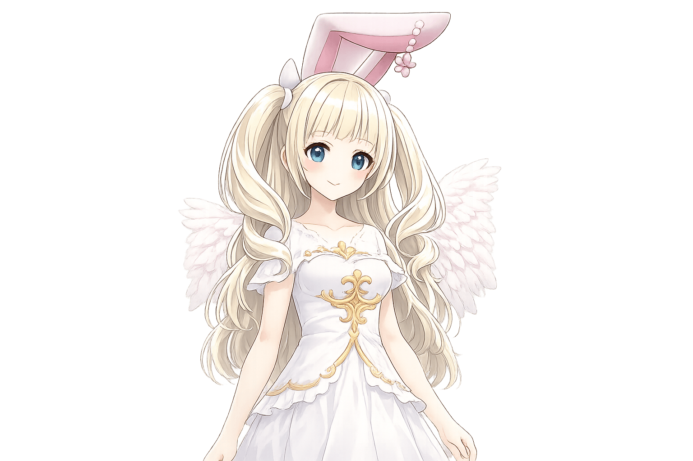
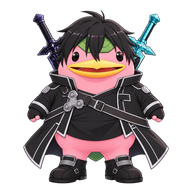
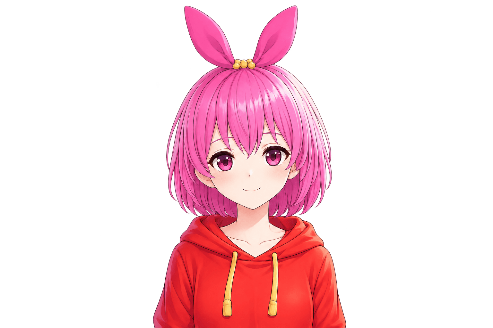
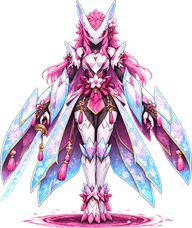
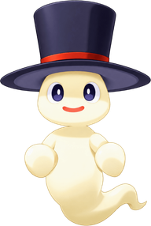

⚔ フレンド対戦 3 VS 3ラウンド 12

フレンド「そらまめ」の助手
みゅあ 積極型

もちまる
429/610
ガッツ 16
ガッツ 16
💪もちきガ16・零近🧠強・距離撃ガ20・中遠💪大モッチ砲ガ44・零近中遠
零近中遠
 ごろべえ
ごろべえ もちまる
もちまる会心!−181
💪 ちから技・ガッツ −16キック

あなたの助手
きき 分析型

ごろべえ
149/670
ガッツ 16
ガッツ 16
💪キックガ16・零近🧠極・距離撃ガ20・中遠💪竜巻アタックガ68・零
R11 ぴくしぃ は たおれた
R12 もちまるの 大モッチ砲 → 210
🌸 きき「読みどおり。いまの間合いなら当たると思った」手の候補: 技 ＞ 交代 ＞ ガード
✖✖✖✖✖
⏸×1×2×4★ 見せ場だけ⏭ 結果へ